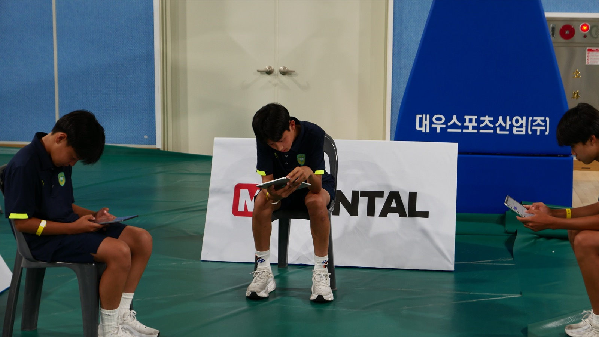
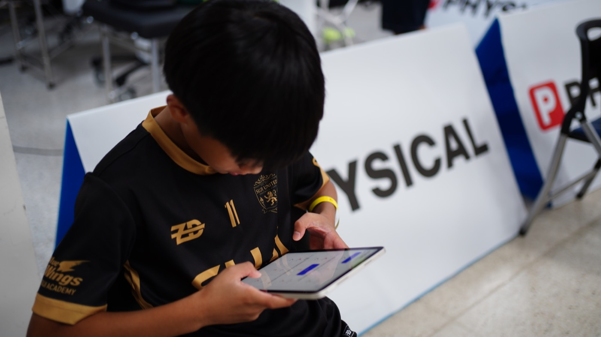
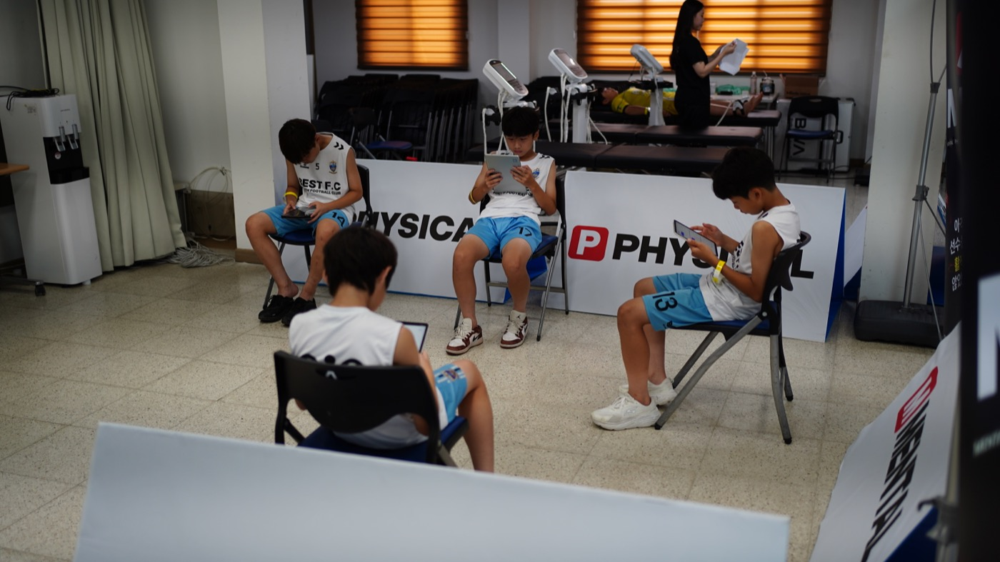
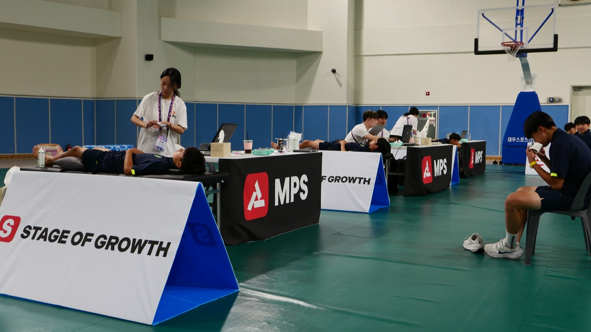
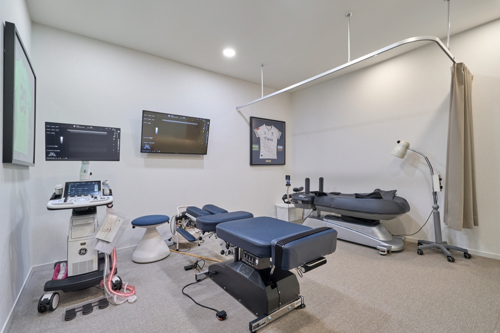
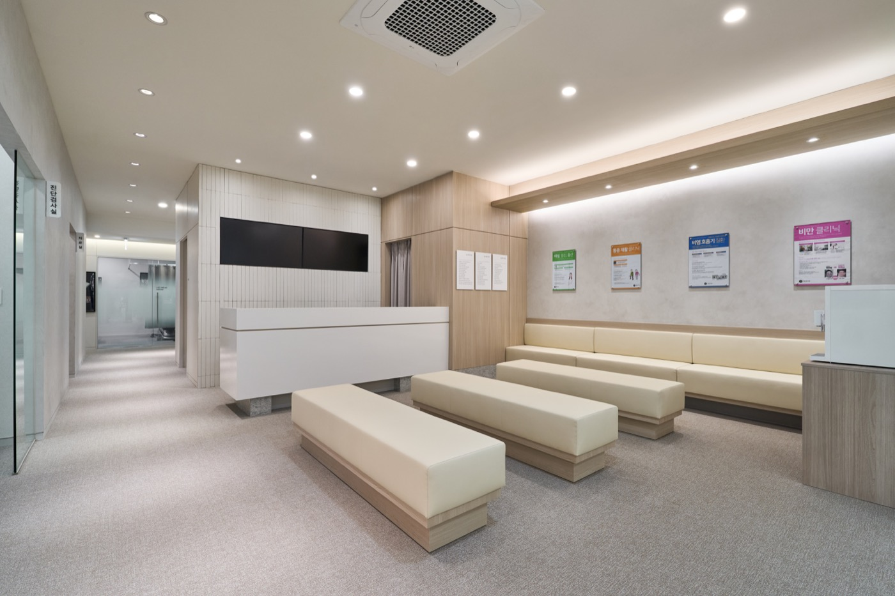

오늘의 나를 기록
마음과 몸의 상태, 어려웠던 장면, 해낸 시도를 선수의 언어로 남깁니다.
MPS 멘탈 다이어리심화 멘탈리포트와 매일의 다이어리를 바탕으로,
세 전문가가 한 팀으로 함께하는 멘탈 강화.
우리 아이의 성장 속도에 맞춰, 다음 플레이를 준비합니다.
더 강한 선수가 되는 길,
혼자 견디지 않아도 괜찮습니다.
기록에서 실천까지 이어지는나만의 멘탈 성장 루프
심화 리포트로 강화할 방향을 찾고, 다이어리로 일상의 변화를 읽습니다. 상담에서 찾은 방법을 훈련과 경기에서 직접 써보는 것이 MPS 프로그램의 중심입니다.
마음과 몸의 상태, 어려웠던 장면, 해낸 시도를 선수의 언어로 남깁니다.
MPS 멘탈 다이어리MPS 리포트보다 한 단계 깊게. 강점과 부담, 준비와 회복의 경향을 살핍니다.
MPS 심화 멘탈리포트경기 장면과 멘토의 경험을 함께 나누며, 다음 플레이에 써볼 방법을 찾습니다.
개별 멘탈 멘토링 · 예정경기와 일상에서 달라진 장면을 돌아보고, 다음 목표와 루틴을 조정합니다.
기록 · 피드백 · 다음 시도기록 → 대화 → 실천 → 점검. 나에게 맞는 방법을 찾을 때까지 함께 다듬습니다.


유럽·미국의 엘리트 멘탈 강화 프로그램을 참고해, 기록과 피드백·반복 연습을 성장기 선수의 일상에 맞게 연결합니다.
“오늘 어땠어?”라는 질문에 말이 막히는 날.
가볍게 선택하고, 쓰고 싶을 때 한 줄 남겨보세요. 선수가 직접 남긴 문장이 멘토링의 출발점이 됩니다. 해낸 시도와 다시 해보고 싶은 장면을 함께 찾습니다.
오늘을 돌아보고,
다음 시도를 준비해요.작은 기록 하나도 나를 알아가는 시간.
정답은 없어. 지금 마음과 가까운 걸 골라봐.
평범한 하루도 괜찮아. 오늘 해본 작은 시도 하나를 떠올려볼까?
다이어리 소개용 체험 화면 · 선택한 내용은 저장·전송되지 않습니다.
5대 멘탈 지표 · 설명을 위한 가상 프로필
실제 선수 정보가 없는 설명용 예시입니다.
MPS 리포트의 심화 버전으로, 다섯 가지 멘탈 지표와 압박 대처·준비 주도·실수 회복의 경향을 함께 살핍니다. 성장단계와 멘탈발달단계, 다이어리 속 실제 장면을 함께 읽으며 무엇을 어떻게 더 키워갈지 정합니다.
멘탈 포지션은 현재의 경향을 이해하는 참고 자료입니다. 고정된 성격, 능력의 등급이나 의학적 진단을 뜻하지 않습니다.

경기 속 한 장면을 다음 연습의 출발점으로.
지금 아이에게 필요한 연습을 살펴보세요.
긴장이 커지는 순간과 몸의 신호를 기록하고, 첫 플레이에 집중할 수 있는 준비 순서를 함께 찾습니다.
멘토링에서 함께 다룰 수 있는 훈련 예시입니다. 실제 계획은 상담 후 정합니다.
프로 출신·팀닥터 출신·한방소아과전문의.
스포츠심리상담 전문성을 갖춘 세 사람이 한 팀으로, 선수의 마음과 몸·성장을 함께 살핍니다.
팀닥터 출신 · 스포츠심리상담사
팀닥터의 현장 경험과 심리상담 전문성으로 훈련 부담과 컨디션을 함께 살피고, 필요한 진료와 회복 관리를 연결합니다.
컨디션 · 스포츠한의학 · 회복프로선수 출신 · 스포츠심리상담사
선수 시절 어려움을 이겨낸 경험을 나누고, 아이의 경기와 기록에서 직접 써볼 수 있는 대처 방법을 함께 찾습니다.
마음 이해 · 멘탈 루틴 · 멘토링한방소아과전문의 · 스포츠심리상담사
성장과 멘탈발달단계를 함께 고려해 아이의 눈높이에 맞게 소통하고, 수면·영양·회복을 포함한 건강 관리를 돕습니다.
성장기 건강 · 수면 · 영양훈련 중 생긴 고민도, 경기 후 풀리지 않는 마음도. 기록과 질문을 이어가며 세 전문가가 필요한 관점에서 함께 살핍니다.
대면 상담에서는 선수의 경기 영상을 함께 보며
그 순간의 생각과 선택을 듣습니다.
이미 해낸 시도에서, 더 강화할 방법을 찾습니다.
심화 리포트와 다이어리를 실제 플레이에 연결하고, 선수 자신의 이야기를 먼저 듣습니다.
멘토가 긴장과 실수, 슬럼프를 어떻게 지나왔는지 나눕니다. 그 경험에서 아이에게 맞는 힌트를 함께 찾습니다.
목표 설정, 자기 대화, 집중과 준비 루틴을 아이의 말로 정리하고 직접 시도해봅니다.
“실수한 뒤에도 다시 움직였네.
그때 어떤 생각이 들었어?”
멘토가 비슷한 순간을 이겨낸
경험과 방법을 들려줍니다.
“다음 경기에서는 어떤 말이
다시 집중하는 데 도움이 될까?”
플레이의 배경을 이해하고, 다음 행동을 함께 찾는 시간.
지금의 반응 하나로 멘탈의 강약을 정하지 않습니다. 성장단계, 생각과 감정을 다루는 발달단계, 운동 경험을 함께 고려합니다.

아이마다 마음을 표현하고 경험을 이해하는 방식이 다릅니다. 같은 목표도 설명하는 말과 연습의 크기, 피드백의 속도를 다르게 조정합니다.

전문적인 검사와 상담으로 강화 방향을 구체화합니다. 수면·피로·통증 등 몸의 어려움이 있다면 의료진이 상태를 살피고 필요한 스포츠한의학적 도움을 연결합니다.
검사와 진료의 필요성은 개별 상태에 따라 결정합니다. 별도의 정신건강 진료가 필요한 경우 적절한 전문기관의 도움을 안내합니다.
선수에게는 스스로 해낼 힘을.
부모님에게는
그 마음을 이해하는 언어를.
부모님께는 아이가 어떤 시도를 했고,
다음에 무엇을 연습할지 이해하기 쉽게 나눕니다.
일상에서 건넬 응원의 말도 함께 찾습니다.
결과보다 스스로 선택할 수 있는 행동 하나를 함께 정해요.
분석을 시작하기 전에, 먼저 마음과 이야기할 준비를 살펴요.
비교보다 시도한 장면을 짚어주고 다음 도전을 함께 응원해요.
종목, 연령대, 현재 고민을 알려주세요. 필요한 지원과 진행 가능 일정을 확인합니다.
심화 리포트와 다이어리로 강점과 강화할 방향을 찾습니다. 성장·멘탈발달단계도 함께 살핍니다.
대면·비대면 만남에서 기록과 경기 장면을 나누고, 실제 훈련에 적용할 방법을 연습합니다.
선수·부모와 달라진 장면을 돌아보고 다음 목표를 정합니다. 이후의 훈련에서도 이어갈 루틴을 남깁니다.
프로그램 구성·기간·진행 방식·비용은 선수의 상황과 운영 일정에 따라 개별 안내합니다.
편하게 문의할 수 있도록,
시작 전 궁금할 내용을 모았습니다.
경기 준비, 자신감, 집중, 실수 후 회복처럼 더 키워보고 싶은 힘이 있다면 시작할 수 있습니다. MPS는 심화 리포트와 다이어리를 바탕으로 연습과 피드백을 이어가는 멘탈 강화 프로그램입니다.
다이어리는 선수가 일상에서 직접 남기는 마음과 경험의 기록입니다. 심화 멘탈리포트는 평가 결과를 바탕으로 현재의 멘탈 경향과 실천 방향을 살피는 자료입니다. 멘토링에서는 둘을 함께 보며 실제 장면에 맞는 연습을 찾습니다.
기존 리포트가 있다면 문의할 때 알려주세요. 현재 목표와 평가 시점을 확인하고, 심화 리포트나 추가 검사·상담이 필요한지 안내합니다. 기존 자료는 선수를 이해하는 출발점으로 활용합니다.
부모님과는 아이의 실천과 변화를 돌아보고 다음 강화 방향을 나눕니다. 선수 스스로 기록하고 말할 수 있는 시간을 존중하면서, 가정에서 어떤 응원이 도움이 될지도 함께 살핍니다. 참여 방식과 공유 범위는 시작할 때 안내합니다.
대면 상담에서는 선수의 경기 영상을 함께 보며 그 순간의 생각과 선택, 다시 시도한 장면을 돌아봅니다. 기술적인 채점보다 어떤 멘탈 루틴과 대처 방법을 더해볼지 찾는 시간입니다. 영상 준비와 진행 방식은 사전에 안내합니다.
다이어리에 남긴 고민이나 훈련 중 생긴 질문을 편하게 나눌 수 있도록 소통을 이어갑니다. 질문 내용에 따라 전문가 팀이 함께 살피며, 이용 채널과 답변 시간은 프로그램 시작 시 안내합니다.
프로 출신 스포츠심리상담사의 멘탈 멘토링은 오픈 예정입니다. 현재는 기존 해온한의원 상담 채널에서 프로그램 관련 문의를 받고 있습니다. 시작 일정과 진행 방식, 기간 및 비용은 문의 시 확인해주세요.
필요한 도움은 선수마다 다릅니다. 스포츠한의학적 진료는 몸의 상태와 의료진의 판단에 따라 별도로 상담하며, 모든 선수에게 동일한 검사나 치료를 일괄 적용하지 않습니다.
아이의 종목과 성장 과정, 더 키워주고 싶은 힘을 들려주세요.
심화 리포트와 다이어리에서 시작할 강화 방향을 함께 찾겠습니다.

선수·학부모 프로그램 문의
카카오톡에서 ‘MPS 멘탈 프로그램’을 말씀해주세요.
멘토링 오픈 일정·상담 가능 시간은 문의 시 안내합니다.